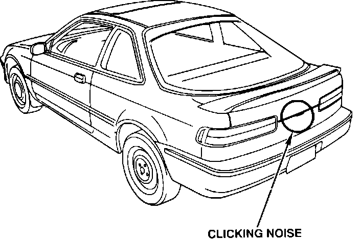
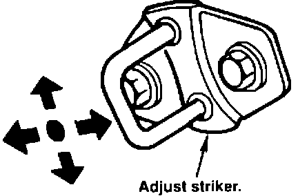
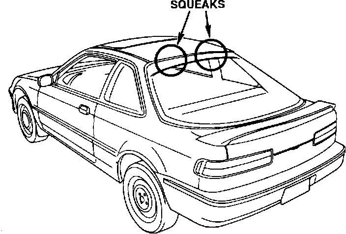
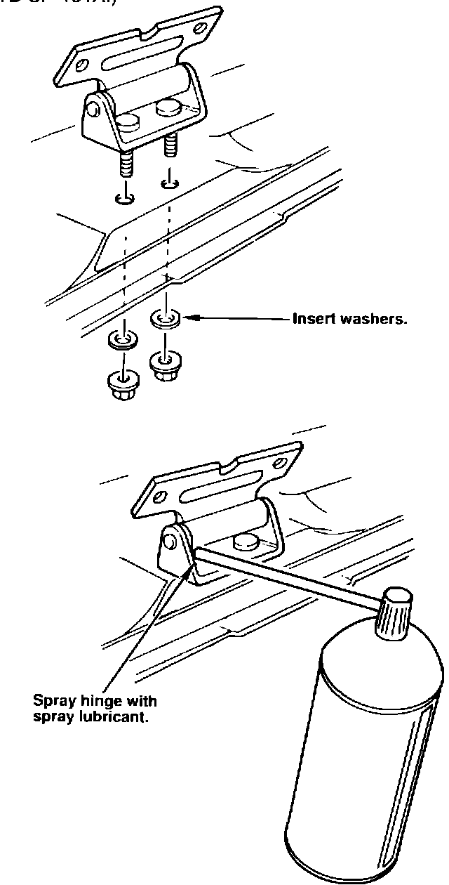

Tailgate

Tailgate Lock Rattles
Symptom: Clicking from the tailgate area when entering a driveway, going over large bumps or changing lanes.
Source: Incomplete lock of the tailgate lock and striker.

Corrective Action: Loosen the tailgate's striker screws, and align the lock groove; then, center the striker and tighten the screws. If the clicking persists, replace the tailgate assembly (P/N 74800-SK7-003).
WARRANTY CLAIM INFORMATION
Operation number: 823052 - Repair 823152 - Replace
Flat rate time: 0.4 hours
Failed P/N: 74850-SK8-003
Defect code: 042
Contention code: B07

TAILGATE
Tailgate Hinge Squeaks
Symptom: Squeaks from the tailgate hinge when driving over rough roads or going over bumps.
Source: Friction between the roof panel and the hinge at the tailgate attachment.

Corrective Action: Lower the rear part of the roof lining and remove the nut for the tailgate hinge. Insert a 26 mm diameter, 2 mm thick washer and retighten the nut. Spray the hinge with a spray lubricant, (P/N TB-SP-19TA.)
WARRANTY CLAIM INFORMATION
Operation number: 823082
Flat rate time: 0.5 hours
Failed P/N: 68660-SK8-000ZZ
Defect code: 042
Contention code: B07